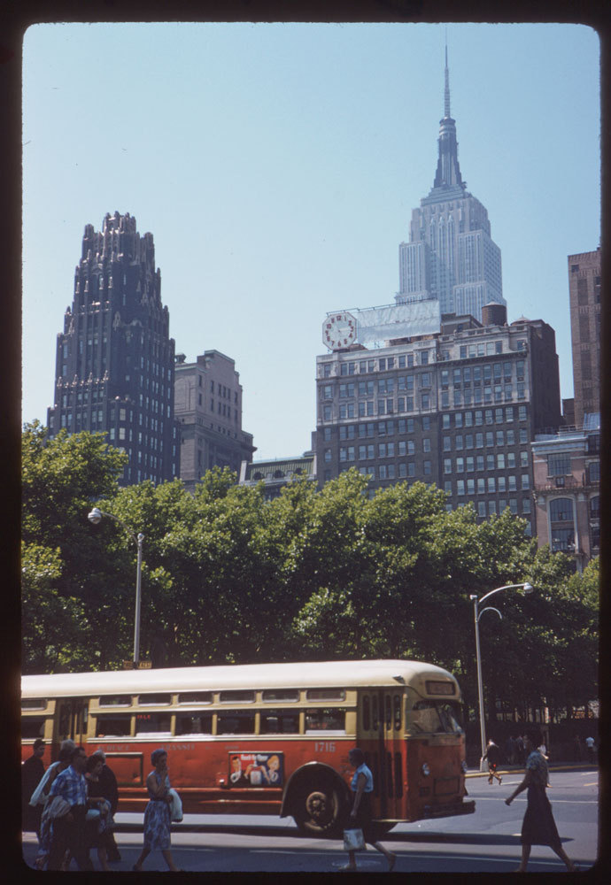
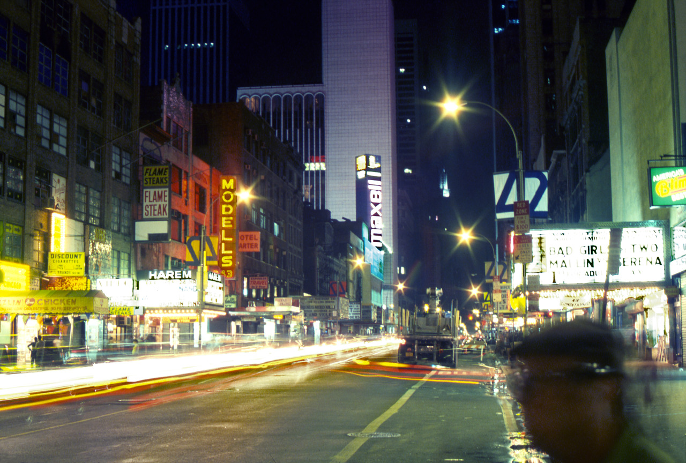
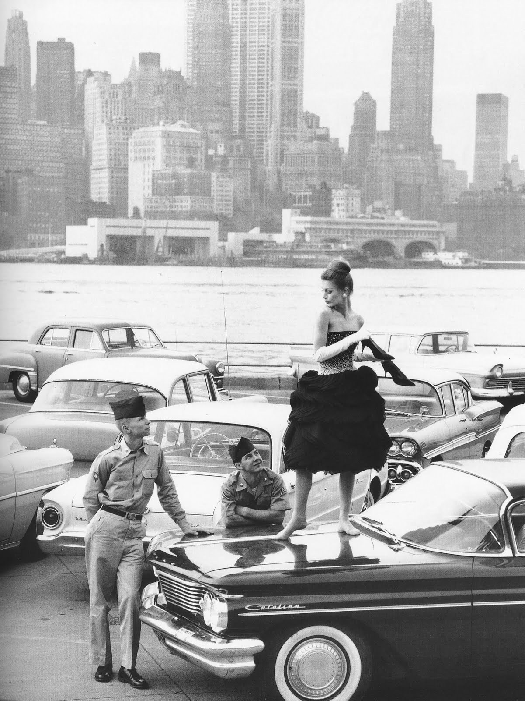

210 West 147th Street, 1992.
210 West 147th Street, 1992.

Atypical street musicians, circa 1970, on Columbus Ave.

Lower East Side, 1941. Broome and Baruch.

NYC hotdog cart in 1942.

Looking south from 42nd and Sixth Ave, 1960.
Talking about the important things in life. Park Ave, 1970s.

Say cheese!
New York. The Metropolitan Museum of Art, from 5th Ave, 1903.
This is my new favorite picture.

Duke Ellington is the marquee name at New York’s Apollo Theatre
8th Ave near 45th Street, 1970s.
2nd Avenue at 72nd Street, Manhattan, 1930s
7th Ave and 8th Street, 1972. Embarrassing cop scooter.
Garment district, 1972.

42nd Street, 1973. When blaxploitation and porn co-existed with Barbara Streisand.

Times Square, 1972.

5th Ave and 14th St, 1974.
A llama in Times Square. 1957.
Radio City

42nd Street, 1984, looking East towards 5th Ave.
Superman balloon floating through Times Square. 1940 Thanksgiving parade.

Central Park West, 1960. Happy kid with cool balloons.

The first Papaya King, 86th Street and 3rd Ave. I believe the short face is on 86th, to the left, headed west; the long face is on 3rd, headed north.

Papaya King in 1972. 72nd and Broadway.

NYC 1960. Dancing for morale.

Skateboarding in Central Park, 1965.

Anco Theater, 254 West 42nd Street

Ice cream man, Brooklyn, summer 1977.